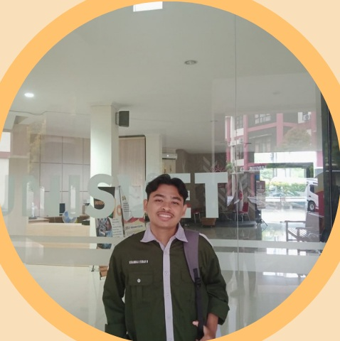

PROFIL
M. SYIHAB MUNTAFAK
KELAS PAI5A-SEMESTER 5
Mahasiswa Universitas Ivet semarang asal Demak kelahiran 5 Desember 2005, dengan motto hidup "Semua jatuh bangunmu hal yang biasa, angan dan pertanyaan waktu yang menjawab nya, berikan tenggat waktu bersedihlah secukupnya, rayakan perasaanmu sebagai manusia."
NPM: 7124110044